Round Head / "Pig Head" in Hong Kong
[Sources for this page]Sources for this page
- cantopopcd, on Y2026-M03-D13 | 紫色既消防龍頭 | Threads | https://www.threads.com/@cantopopcd/post/DV0mK0GEqBY
- Clément Bucco-Lechat, on Y2012-M10-D27 | Blue and grey hydrant in Hong-Kong | Wikimedia Commons | https://commons.wikimedia.org/wiki/File:Hydrant_in_Hong-Kong_2.JPG
- danes96, uploaded on Y2006-M03-D12 (photo taken on Y2006-M02-D24) | Purple Fire Hydrant | Flickr | https://www.flickr.com/photos/danes96/111182471/
- Drainage Services Department (HKSAR Government), revised on Y2025-M04-D23 | Reclaimed Water | https://www.dsd.gov.hk/EN/Sewerage/Environmental_Consideration/Reclaimed_Water/index.html
- Eve Lee, on Y2026-M03-D21 | 上水天平邨停車場入閘口紫色琴日改咗做銀色啦 | comment of a Facebook post | under https://www.facebook.com/Skyposthk/posts/1370194715154460/
- Google | Google Maps (Street View) | https://www.google.com/maps/
- Hong Kong Fire Services Department (HKSAR Government), on Y2008-M01-D23 | FSD Circular Letter No. 1/2008 - Inspection Checklist for Street Fire Hydrant System | https://www.hkfsd.gov.hk/eng/source/circular/2008_01.pdf
- Hong Kong Fire Services Department (HKSAR Government), on Y2008-M01-D23 | 消防處通函第1/2008號 街道消防栓系統的檢查核對表 | https://www.hkfsd.gov.hk/chi/source/circular/2008_01.pdf
- Hong Kong Fire Services Department (HKSAR Government), on Y2018-M02-D22 | From Pat Heung to Pak Shing Kok - Fire and Ambulance Services Academy, 06:06/09 and 10:55 | YouTube | https://www.youtube.com/watch?v=SJOovMaDjSs
- Hong Kong Fire Services Department (HKSAR Government), on Y2024-M04-D15 | 【全民國家安全教育日🔹消防及救護學院開放日🎞️足本重溫】, 02:22/24 and 02:33/35 | YouTube | https://www.youtube.com/watch?v=NazzIy8FH8A
- Hong Kong Fire Services Department (HKSAR Government), on Y2025-M04-D13 | 【🎦現場直播📣全民國家安全教育日🔹消防及救護學院開放日2】, 06:29/31 | YouTube | https://www.youtube.com/watch?v=zIBnoM5J5Qc
- HKSAR Government, on Y2024-M09-D15 | 再造水成水資源生力軍 | news.gov.hk | https://www.news.gov.hk/chi/2024/09/20240915/20240915_112456_456.html
- HKSAR Government, reviewed in Y2026-M06 | Use of Reclaimed Water | GovHK | https://www.gov.hk/en/residents/environment/water/sewage/usereclaimedwater.htm
- Jade Flower, on Y2021-M12-D29 | 白い消防龍頭 | Seesea Blog | https://jade-flower2.seesaa.net/article/202112article_29.html
- Lands Department (HKSAR Government) | GeoInfo Map | https://www.map.gov.hk/gm/map/ | I learnt about this source from snowshine12345 https://www.discuss.com.hk/viewthread.php?tid=29167296&page=1#pid520626555
- Man Yu Hang, on Y2025-M03-D11 | 鐵喉23 | Facebook | https://www.facebook.com/photo.php?fbid=10164837976212738
- Mark Lam Channels, on Y2024-M10-D01 | 20241001 消防及救護學院同樂日, 06:30/35 and 10:59/11:01 | YouTube | https://www.youtube.com/watch?v=b_41aSmKJZ8
- mei_mymelissa, on Y2026-M03-D14 | 迪士尼紫色消防龍頭 | Threads | https://www.threads.com/@mei_mymelissa/post/DV2DxHJkyZt
- roywkwu, on Y2024-M03-D14 | 紫色水龍頭 | U Community | https://www.ulifestyle.com.hk/community/detailpost/a8d6b20c-2417-4bb3-a9d2-d01c602d5e04/打卡熱點/紫色水龍頭/roywkwu/440
- Water Supplies Department (HKSAR Government), originally on Y1995-M11-D20, revised on Y2003-M09-D05 | Water Supplies Department Standard Drawings 1.34B: Painting on Fire Hydrant | https://www.wsd.gov.hk/filemanager/en/content_1599/WSD0134-B.pdf
- Water Supplies Department (HKSAR Government), on Y2015-M05-D22 | Water Supplies Department Standard Drawings 1.54 - Details of Cast Iron Round Head Fire Hydrant | https://www.wsd.gov.hk/filemanager/en/content_1599/WSD0154.pdf
- Water Supplies Department (HKSAR Government), revised on Y2024-M03-D01 | 水管改善工程與緊急維修 (I am specifically referring to the Chinese version of the page) | https://www.wsd.gov.hk/tc/water-matters/water-distribution/07/
- Water Supplies Department (HKSAR Government), in Y2024-M09 | Technical Specifications on Grey Water Reuse and Rainwater Harvesting (2nd Edition), Paragraph 10.2.1 on page 46 | https://www.wsd.gov.hk/filemanager/en/content_1874/technical_spec_grey_water_reuse_rainwater_harvest.pdf
- Water Supplies Department (HKSAR Government), on Y2025-M11-D19 | 9055WS | https://www.wsd.gov.hk/en/core-businesses/major-infrastructure-projects/major-projects-under-construction/9055ws/index.html
- Water Supplies Department (HKSAR Government), on Y2026-M01-D08 | Recycled Water | https://www.wsd.gov.hk/en/core-businesses/water-resources/recycled-water/index.html
- Waterworks Office (British Hong Kong), on Y1967-M03/Y1970-M08 | HKRS287-1-681 Fire Hydrants - Island - Record of installation, removals, changes of Position or Type | Public Records Office, Government Records Service (HKSAR Government)
- 彭比德, on Y2025-M12-D12 | 消防龍頭除了大家所知四種顏色外 香港又有冇紫色消防龍頭? | Facebook | https://www.facebook.com/share/p/185GyVswD7/
- 彭比德, on Y2025-M12-D19 | 紫色消防龍頭 探索與迷思 迪士尼/北區 | Facebook | https://www.facebook.com/share/p/1AZErziFg7/
- 彭比德, on Y2026-M02-D01 | 消防龍頭 紫色 北區 | Facebook | https://www.facebook.com/share/p/1NAeyWafqr/
- 提子哥哥, on Y2023-M08-D31 | 消防及救護學院開放日, 01:27/29, 01:47/02:00 | YouTube | https://www.youtube.com/watch?v=649FoUG9qGc
The Water Supplies Department released the standard drawings of Round Head on their website. Look for WSD 1.54 - Details of Cast Iron Round Head Fire Hydrant. You can check it out if you are interested in the technical specifications of a Round Head hydrant.
Something else to note, while most people don't seem to think of Round Head hydrants as being historic, especially when compared to other iconic hydrant types such as the "Octagonal" and Heavy Draw-off hydrants, Round Head is not actually that modern. The earliest photo I know of that showed an "Octagonal" hydrant was taken in 1941, which means the design is at least 85 years old (as of 2026), while the earliest mentions of Heavy Draw-off hydrants I managed to find were in 1961-1962 (but that was the year when the Heavy Draw-off hydrants were first proposed so I believe the design is a few years younger, probably around 60 years old). Round Head hydrants were mentioned in the 1967 to 1970 hydrant installation records, so the design is at least 56 years old, if not older. Yeah, Round Heads are not actually that much more modern compared to the Heavy Draw-off hydrants! The only difference being, Heavy Draw-off hydrants were only manufactured in relatively small numbers and are being retired nowadays, while we still see Round Heads being manufactured today and installed everywhere.
Okay, colours. So Round Heads painted in red use fresh water and those painted in yellow use sea water, how about the others? Are there wacky variants?
Round Heads painted green
Green Round Heads can be found outside the paid area of Hong Kong Disneyland, but it is inconsistent in that some green Round Heads are more pale in colour that others. Those scattered along Park Promenade between the Disneyland Resort MTR station and the Disneyland Resort Pier are mostly pale in colour. It is also unclear whether there are green Round Heads inside the paid area of Hong Kong Disneyland.
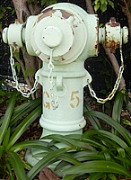 |
| green (pale) Round Head G5 |
| Park Promenade, outside ticket gates of Hong Kong Disneyland |
| Photo taken in Y2026-M03 |
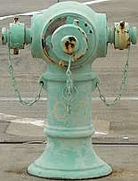 |
| green (pale) Round Head C7 |
| Hong Kong Disneyland coach car park southwest corner |
| Photo taken in Y2026-M08 |
 |
| green Round Head C5 |
| Hong Kong Disneyland coach car park southeast corner |
| Photo taken in Y2026-M08 |
Green Round Heads also appears to have existed in the Fire and Ambulance Services Academy in Tseung Kwan O according to some online videos showing the previous Academy open days, but some of them appears to have weathered paint and even rusted by 2024. By the 2026 Academy open day on Y2026-M04-D12, some of these hydrants have been repainted teal rather than green. In other words, you may not find green Round Heads at the Academy anymore, but I am not sure, I will have to go to an Academy open day in the future to be able to say definitively.
Round Heads painted teal
Teal Round Heads have been found along what appears to be an emergency vehicle access road surrounding the Hong Kong Disneyland Hotel. The number markings on these hydrants have prefix "DH" (Disneyland Hotel...?). The access road (at least the section that is part of the garden behind the hotel) is open to the general public for free so you can get up close to these hydrants even if you didn't book to stay there. As previously mentioned, four teal Round Heads in the Fire and Ambulance Services Academy are visible from 2/F of the Fire and Ambulance Services Education Centre cum Museum, they used to be painted green. I have no idea what water teal Round Heads use.
 |
| Teal Round Head DH4 |
| Hong Kong Disneyland Hotel emergency vehiclular access at southeast corner of West Lawn |
| Photo taken in Y2026-M08 |
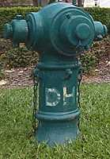 |
| Teal Round Head DH5 |
| Hong Kong Disneyland Hotel emergency vehiclular access near White Gazebo |
| Photo taken in Y2026-M03 |
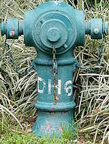 |
| Teal Round Head DH6 |
| Hong Kong Disneyland Hotel |
| Photo taken in Y2026-M08 |
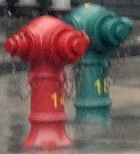 |
| red Round Head 14 and teal Round Head 18 |
| Fire and Ambulance Services Academy |
| Photo taken in Y2026-M05 |
Round Heads painted lavender
Recently, there have been some discussions online about lavender Round Heads. Netizens say these can be found inside the paid area of Hong Kong Disneyland and in the North district, and that they use reclaimed water, I will talk about these one by one.
Lavender Round Heads were found inside the paid area of Hong Kong Disneyland as far back as 2006, according to a photo uploaded to flickr by flickr user danes96. In 2024, netizen roywkwu posted a photo of a lavender Round Head with yellow markings FL8, and the photo was marked as being taken in Hong Kong Disneyland. Based on the FL8 markings, the lavender Round Head photographed by roywkwu was likely located in the Fantasyland area of Hong Kong Disneyland.
As for the North district, the short answer is that you can indeed find lavender Round Heads there. All of them have no markings, do not show up in GeoInfo Map, and are next to a red Round Head. If you are wondering what GeoInfo Map is, check out this other page. So far, I managed to locate three in the Sheung Shui area:
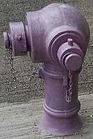 |
| San Wan Road at San Po Street |
| Photo taken in Y2026-M05 |
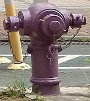 |
| Ching Hiu Road pedestrian crossing outside Ching Ho Shopping Centre shop number 1 |
| Photo taken in Y2026-M07 |
 |
| Ching Shing Road outside Elegantia College |
| Photo taken in Y2026-M03 |
I am aware that I likely missed many lavender Round Heads in the North District, especially those in the villages.
For discussion about the type of water used by lavender hydrants, see this page.
Round Heads painted primer silver
I believe the silver colour of these Round Heads is the result of the primer coating, which I discussed in more detail in this page. Of the three primer silver Round Heads I managed to find in the North District, the San Wan Road and Ping Kong Road ones are unique in that they were previously painted lavender (I am not sure about the Choi Shun Street one so I will not talk about it). They have retained their primer silver coating for a few months already, even though a primer is only supposed to be a temporary coating. We know they were lavender because there were photos of the Ping Kong Road one in lavender paint online, and we can see hints of lavender on the San Wan Road one (and its surface box lid is still lavender). I have never heard of hydrants painted in a specific colour being repainted primer silver. I have no idea why they reverted back to a primer, and I also don't know if other lavender Round Heads will become primer silver in the future. All three primer silver Round Heads are also located not far from a red Round Head, similar to the lavender Round Heads.
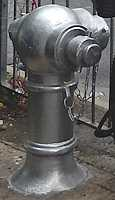 |
| Choi Shun Street outside Hi-Tech Centre |
| Photo taken in Y2026-M05 |
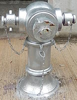 |
| San Wan Road outside former KMB bus depot in Sheung Shui |
| Photo taken in Y2026-M05 |
 |
| Ping Kong Road at TWGHs Ma Kam Chan Memorial Primary School carpark entrance (this hydrant used to be north of lamp post GD3281, but it was moved a few metres south and has been south of GD3281 since Y2026-M05) |
| Photo taken in Y2026-M07 after it moved south |
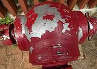 |
| Red Round Head 14106 with peeled red paint, showing silver colour primer coating underneath. |
| Ping Kong Rd outside TWGHs Ma Kam Chan Memorial Primary School |
| Photo taken in Y2026-M07 |
Round Heads painted primer grey
You might have heard of or even seen Round Heads in primer silver, how about grey ones? On Y2026-M05-D31, I spotted a grey Round Head on Nathan Road at Mau Lam Street. That location had no fire hydrants as late as Y2025-M08 according to photos available on Google Maps. This Round Head does not show up in GeoInfo Map (explained in this page). There is also a Round Head in primer grey inside the footbridge lift construction site near Heavy Draw-off hydrant 28202, which means it might replace 28202 when the lift is finished.
 |
| Unnumbered primer grey Round Head with caps painted blue, which means it is not in service. It is still not in service as of Y2026-M07 |
| Nathan Road at Mau Lam Street |
| Photo taken in Y2026-M05 |
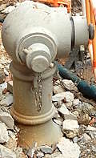 |
| primer grey Round Head, number currently unknown |
| Boundary Street at Embankment Road, near Heavy Draw-off hydrant 28202 |
| Photo taken in Y2026-M08 |
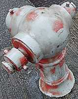 |
| Red Round Head 7806 with fading red paint, showing grey colour primer coating underneath. |
| Chatham Road North at Baker St |
| Photo taken in Y2026-M07 |
If you check the locations of the Ping Kong Road (previously lavender, currently silver) and Elegantia College (currently lavender) Round Heads in Google Maps street view, you will find that they were also grey in Y2024-M04, neither lavender nor silver. This means that the Ping Kong Road Round Head started off as primer grey, then painted lavender, until it was painted again to primer silver. Talk about waste of paint.
Round Heads with extended side nozzles
If you travel along the North Lantau Highway (and I guess also Cheung Tung Road) or check Google Maps street view of the highway, you will see some bizzare red Round Heads with extended side nozzles that face forward. I think there are around twenty of these, all of which are in recesses of the concrete road barriers at the outer lane edge of the east-bound lanes of the highway (that's a lot of ofs). The Round Heads at the outer lane edge of the west-bound lanes (no concrete barriers on that side) don't have extended side nozzles. My guess is that there might not be enough clearance for the hoses to be attached to the side nozzles without the extensions, because of the hydrants being installed in the recesses. At first glance, those extensions might look like Swan Neck hydrants. But Swan Necks have a connector between the cap and the hydrant, while these Round Head extensions have no connector between the cap and the extension.
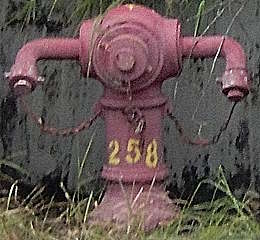 |
| Red Round Head 258 with extended side nozzles |
| North Lantau Highway close to Tai Ho Wan |
| Photo taken in Y2026-M08 |
| Red Round Head 275 with extended side nozzles |
| North Lantau Highway near Long Win Bus Siu Ho Wan Depot |
| Photo taken in Y2026-M08 |
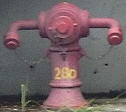 |
| Red Round Head 280 with extended side nozzles |
| North Lantau Highway near Sham Shui Kok Traction Substation |
| Photo taken in Y2026-M08 |
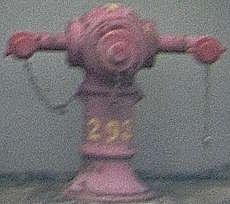 |
| Red Round Head 293 with extended side nozzles |
| North Lantau Highway west of Yam O Wan |
| Photo taken in Y2026-M08 |
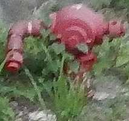 |
| Red Round Head 4ND |
| Tsing Long Highway, ~600m north of Tai Lam Tunnel bus interchange |
| Photo taken in Y2026-M07 |
There is also at least one Round Head on the Tsing Long Highway with extension on just one of the side nozzles. It seems to have the hydrant number 4ND, and is on the edge of the outer lane of the south-bound lanes, approximately 600 metres north of Tai Lam Tunnel Bus Interchange. Unlike the extensions on the North Lantau Highway Round Heads, 4ND's extension does have the Swan Neck cap connector, but if you look carefully you can see that it is not a Swan Neck. 4ND's extension is made of a short straight section, a curved section, and another short straight section, while a Swan Neck is just a single curved pipe. 4ND and some other hydrants on the Tsing Long Highway do not face the highway directly, but are rotated a little bit. Since 4ND is installed in front of a concrete-reinforced slope, I believe there is also not enough clearance for the side nozzle facing the slope, so someone decided to create this bizzare-looking extension for 4ND.
If you don't understand what I mean by Swan Neck cap connector, check out this page about Swan Necks.
Round Heads with pale red paint
When red Round Heads are left in the elements for a really long time, their colour can become pale or even appear vermilion. Or maybe it is a pale red colour primer? I am not really sure.
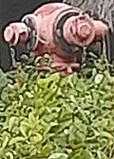 |
| an unnumbered red (pale) Round Head |
| Tsuen Wan Sports Centre |
| Photo taken in Y2026-M05 |
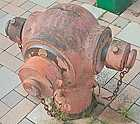 |
| Red (pale) Round Head 10 |
| Tsing Yi Station Bus Terminus |
| Photo taken in Y2026-M04 |
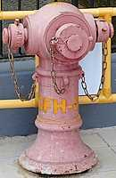 |
| Red (pale) Round Head SFH-01 |
| Junk Bay Chinese Permanent Cemetery section A39 columnbarium "崇孝樓" |
| Photo taken in Y2026-M07 |